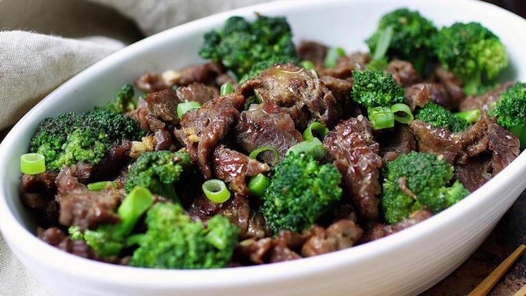

Beef and Broccoli

Description
One of the most savory and simple Chinese dishes, beef and broccoli is a perennial favorite. A few simple ingredients and a flash fry in a stove pan will have this tasty dinner ready to serve to your hungry guests in no time.
Ingredients
Main ingredients:
- Flank steak
- 2Tbsp olive oil or vegetable oil
- 1lb broccoli
- 2 tsp sesame seeds
Stir fry sauce ingredients:
- 1 tsp fresh ginger, grated
- 2 tsp garlic, grated
- 1/2 cup hot water
- 6 Tbsp soy sauce
- 3 Tbsp brown sugar
- 1 1/2 Tbsp corn starch
- 1/4 tsp black pepper
- 2 Tbsp sesame oil
Steps:
- Prep:Start cooking white rice first so it's ready when the stir fry is done. Cover and freeze steak 30 minutes for easier slicing.
- Place a large skillet over medium heat and add 1 Tbsp oil. Add broccoli florets and sauté 4-5 minutes, partially covered with lid, stirring or tossing several times until broccoli is bright green and crisp-tender then remove from pan. Tip: If you prefer softer broccoli, add 2 Tbsp water before covering with the lid and it will steam cook the broccoli.
- Increase heat to high heat and add 1 Tbsp oil. Add beef in a single layer and sauté 2 minutes per side or just until cooked through. Quickly pull out a piece to test for doneness.
- Add the sauce, reduce heat to medium/low and simmer 3-4 minutes. It will thicken. Add broccoli and stir to combine. Stir in 1-2 Tbsp water to thin the sauce if desired. Serve over white rice.